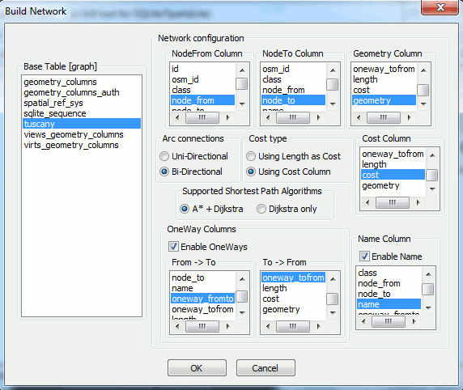

|
"osm">There are several sources distributing network-like
data.
One of the most renowned and widely used is OSM [Open
Street Map], a completely free worldwide dataset.
There are several download sites distributing OSM; just to mention
the main ones:
Anyway in the following example we'll download the required OSM
dataset from:
"http://download.gfoss.it/osm/osm/regioni/">www.gfoss.it
Most precisely we'll download the
"Courier New, monospace">TOSCANA.osm.bz2
dataset. |
Step 1: you must uncompress the OSM dataset.
This file is compressed using the bzip2 algorithm, widely
supported by many open source tools.
e.g. you can use 7-zip to unzip this file.
"http://www.7-zip.org/">www.7-zip.org
Step 2: any
"spatialite_osm_net">OSM dataset simply is an XML
file
(you can open this file using any ordinary text editor at your
choice).
SpatiaLite supports a specific CLI tool allowing to load an OSM
dataset into a DB:
"Courier New, monospace">spatialite_osm_net
"#FFFFFF">>spatialite_osm_net -o TOSCANA.osm -d
tuscany.sqlite -T tuscany -m
SQLite version: 3.7.4
SpatiaLite version: 2.4.0-RC5
using IN-MEMORY database
Loading OSM nodes ... wait please ...
Loaded 1642867 OSM nodes
Verifying OSM ways ... wait please ...
Verified 60893 OSM ways
Disambiguating OSM nodes ... wait please ...
Found 40 duplicate OSM nodes - fixed !!!
Loading network ARCs ... wait please ...
Loaded 121373 network ARCs
Dropping temporary table 'osm_tmp_nodes' ... wait please
...
Dropped table 'osm_tmp_nodes'
Dropping index 'from_to' ... wait please ...
Dropped index 'from_to'
exporting IN_MEMORY database ... wait please ...
IN_MEMORY database succesfully exported
VACUUMing the DB ... wait please ...
All done: OSM graph was succesfully loaded
>
|
Very briefly explained:
TOSCANA.osm selects the input OSM dataset to be
loaded.
tuscany.sqlite selects the output DB to be created and
populated.
- -T tuscany
will create the Geometry Table storing the OSM dataset
- -m an
in-memory database will be used, so to perform data
import in the shortest time.
| id |
osm_id |
class |
node_from |
node_to |
name |
oneway_from_to |
oneway_to_from |
length |
cost |
geometry |
| ... |
... |
... |
... |
... |
... |
... |
... |
... |
... |
... |
| 2393 |
8079944 |
tertiary |
659024545 |
659024546 |
Via Cavour |
1 |
1 |
7.468047 |
0.537699 |
BLOB sz=80 GEOMETRY |
| 2394 |
8079944 |
tertiary |
659024546 |
156643876 |
Via Cavour |
1 |
1 |
12.009911 |
0.864714 |
BLOB sz=96 GEOMETRY |
| 2395 |
8083989 |
motorway |
31527668 |
319386487 |
Autostrada del Sole |
1 |
0 |
424.174893 |
13.882087 |
BLOB sz=80 GEOMETRY |
| 2396 |
8083990 |
motorway |
31527665 |
31527668 |
Autostrada del Sole |
1 |
0 |
130.545183 |
4.272388 |
BLOB sz=112 GEOMETRY |
| ... |
... |
... |
... |
... |
... |
... |
... |
... |
... |
... |
Just a quick check:
- a single
"Courier New, monospace">Tuscany table exists into
the DB created by
"Courier New, monospace">spatialite_osm_net
- each row in this table corresponds to a single network
arc
- the nodes connected by each arc are identified by
"Courier New, monospace">node_from and
"Courier New, monospace">node_to
-
"Courier New, monospace">oneway_from_to and
oneway_to_from
determine if the arc can be walked in both directions or not.
- length is the
geometric length of the arc (measured in meters).
- cost is the
estimated travel time (expressed in seconds).
- geometry is
the LINESTRING
representation corresponding to the arc.
Please note #1: there is no separate representation
for nodes, simply because they can be indirectly retrieved
starting from the corresponding arcs.
Please note #2: this one surely is a real
network, but in this form cannot yet support routing
queries.
A further step is still required, i.e. creating a
"Courier New, monospace">VirtualNetwork table.

We'll use
"Courier New, monospace">spatialite_gui to create the
VirtualNetwork table.
Anyway the same operation is supported as well by the
"Courier New, monospace">spatialite_network CLI
tool
(and this CLI tool supports an extended diagnostic capability,
useful to identify any eventual problem).
*
FROM tuscany_net
WHERE NodeFrom = 267209305
AND NodeTo = 267209702;
|
| Algorithm |
ArcRowid |
NodeFrom |
NodeTo |
Cost |
Geometry |
Name |
| Dijkstra |
NULL |
267209305 |
267209702 |
79.253170 |
BLOB sz=272 GEOMETRY |
NULL |
| Dijkstra |
11815 |
267209305 |
250254381 |
11.170037 |
NULL |
Via Guelfa |
| Dijkstra |
11816 |
250254381 |
250254382 |
8.583739 |
NULL |
Via Guelfa |
| Dijkstra |
11817 |
250254382 |
250254383 |
12.465016 |
NULL |
Via Guelfa |
| Dijkstra |
16344 |
250254383 |
256636073 |
15.638407 |
NULL |
Via Cavour |
| Dijkstra |
67535 |
256636073 |
270862435 |
3.147105 |
NULL |
Piazza San Marco |
| Dijkstra |
25104 |
270862435 |
271344268 |
5.175379 |
NULL |
Piazza San Marco |
| Dijkstra |
25105 |
271344268 |
82591712 |
3.188657 |
NULL |
Piazza San Marco |
| Dijkstra |
11802 |
82591712 |
267209666 |
4.978328 |
NULL |
Piazza San Marco |
| Dijkstra |
20773 |
267209666 |
267209702 |
14.906501 |
NULL |
Via Giorgio La Pira |
And finally you can now test your first routing query:
- you simply have to set the
"Courier New, monospace">WHERE NodeFrom = ... AND NodeTo =
... clause.
- and a result-set representing the shortest path solution
will be returned.
- the first row of this result-set summarizes the
whole path, and contains the corresponding geometry.
- any subsequent row represents a single arc to be
traversed, following the appropriate sequence, so to go from origin
to destination.
tuscany_net SET Algorithm = 'A*';
Algorithm = 'Dijkstra'; |
SpatiaLite's
"Courier New, monospace">VirtualNetwork tables
support two alternative algorithms:
- Dijkstra's shortest path is a classic
routing algorithm, based on thorough mathematical assumptions, and
will surely identify the optimal solution.
- A* is an alternative algorithm based on
heuristic assumptions:
it is usually faster than Dijkstra's, but under some odd condition
may eventually fail, or may return a sub-optimal solution.
- anyway switching from the one to the other is really
simple.
- using the Dijksta's algorithm is the default selection.
| A
"Courier New, monospace">VirtualNetwork table simply
represents a staticized snapshot of the underlying
network.
This allows to adopt an highly efficient binary representation
(in other words, allows to produce solutions in a very quick
time), but obviously doesn't supports dynamic changes.
Each time the underlying network changes the corresponding
VirtualNetwork
must be DROPped
and then created again, so to correctly reflect the latest network
state.
In many cases this isn't an issue at all: but on some highly
dynamic scenario this may be a big annoyance.
Be well conscious of this limitation. |